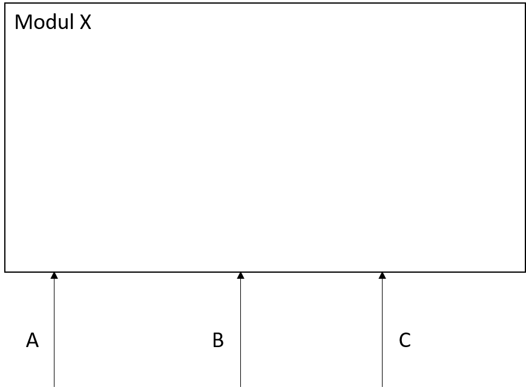
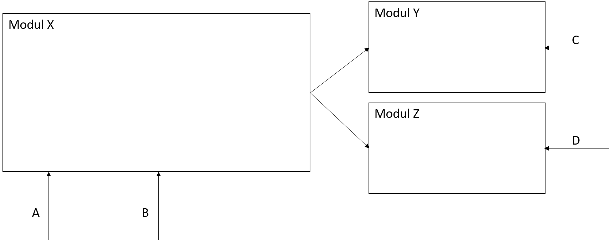
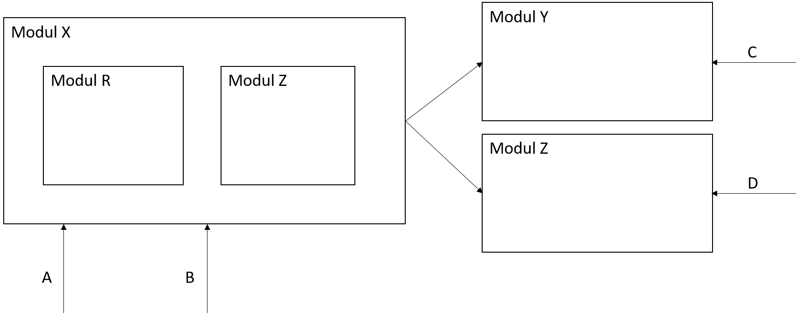

Einführung in das Softwaredesign
Marcel Lüthi
Departement Mathematik und Informatik
Was ist Design?
Ästhetik ist nicht primär erste Aufgabe!Was ist Design?
Formgebende und funktionale Gestaltgebung eines Produkts.
- Strukturiert ein Artefakt
- Zerlegen eines Systems in (einfachere) Komponenten
- Zuweisen von Verantwortlichkeiten
- Sicherstellen, dass Gesamtsystem Anforderungen erfüllt
Designbeispiel Architektur
Entwurf eines Einkaufszentrums-
Teile:
- Verkaufsfläche
- Heizungs- und Lüftungssystem
- Verkabelung
- Parkplatz
- ...
https://commons.wikimedia.org/w/index.php?curid=38147686
Designbeispiel Lehre
Entwurf einer Vorlesung-
Teile:
- Vorlesungen
- Übungen
- Leistungsnachweise
- ...

Design in Software Engineering
Zwei Bedeutungen:
- Schritt zwischen Anforderungsanalyse und Implementation
- Strukturierung eines Artefakts
- Design einer Klasse in einem OO-System
- Design des Anforderungsdokuments
- ...
- Erstellen der Softwarearchitektur / Design
Jedes Artefakt muss strukturiert werden
Module
Modul: Wohldefinierter Teil einer Software
Softwaredesign
Softwaredesign: Aufteilung eines Systems in Module
Softwarearchitektur und Softwaredesign
- Softwarearchitektur: Struktur der Module
- Moduldesign: Entwurf individueller Module

Strikte Trennung Design/Architektur nicht möglich.
- Module können selbst aus Modulen bestehen.
Ziel eines Designs
- Struktur so festzulegen, dass hohe Software-qualität erreicht werden kann.
Wichtigster Grundsatz: Design for change
- Wahrscheinliche Änderungen sollten einfach zu implementieren sein.
"There are two ways of constructing a software design: One way is to make it so simple that there are obviously no deficiencies, and the other way is to make it so complicated that there are no obvious deficiencies. The first method is far more difficult."